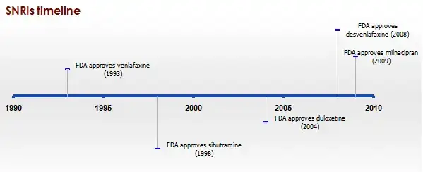

The hypothesis
The monoamine hypothesis, proposed in the 1960s, held that depression results from a deficiency of serotonin (and noradrenaline). It was supported by the action of the first antidepressants, and it became the standard explanation given to patients.
Maps, diagrams and images


The 2022 review
Moncrieff and colleagues published an umbrella review in Molecular Psychiatry in 2022 examining the evidence for lowered serotonin activity in depression. They found no consistent evidence of reduced serotonin, of altered receptor levels, or of a link between serotonin depletion and low mood in healthy volunteers, and concluded that the hypothesis is not supported.
The review was criticised — for the studies it excluded, for the heterogeneity of depression, and for the implication that antidepressants therefore do not work. The drugs do work, better than placebo for moderate and severe depression, by mechanisms that are not fully understood and that are not the same as the hypothesis.
Documented: antidepressants are more effective than placebo in moderate to severe depression.
Not supported: the simple claim that depression is caused by low serotonin.
Contested: what the drugs actually do, and over what timescale.
Not established: a single neurotransmitter explanation of depression.
The honest position: the mechanism is unknown, the treatment is real, and the popular explanation was a simplification that became a fact by repetition.
Why it is in the archive
Because it is the case where a simplified explanation did real harm — to patients who were told their illness was a chemical imbalance — and where the correction is easy to misread as 'the drugs do not work'.
Open resources on this topic
- PapersOpen-access articles: DOAJ · PubMed Central · Internet Archive Scholar
- BooksPublic-domain and borrowable copies: Open Library · Project Gutenberg · Google Books · Internet Archive
More images
Cite this page
Momin, S. (2026). Serotonin and Depression. The Larger World Archive. https://drsamonline.github.io/LARGE_GLOBE/serotonin-depression.htmlMomin, Sohil. “Serotonin and Depression.” The Larger World Archive, 2026, https://drsamonline.github.io/LARGE_GLOBE/serotonin-depression.html.Momin, Sohil. “Serotonin and Depression.” The Larger World Archive, 2026. https://drsamonline.github.io/LARGE_GLOBE/serotonin-depression.html.@misc{serotonin2026serotonin,
author = {Momin, Sohil},
title = {Serotonin and Depression},
year = {2026},
howpublished = {The Larger World Archive},
url = {https://drsamonline.github.io/LARGE_GLOBE/serotonin-depression.html},
note = {Last reviewed 20 November 2026}
}Last reviewed 20 November 2026 · Corrections policy · this page is not peer reviewed
Sources for this page
- Wikipedia, “Biology of depression” — the hypotheses and the evidenceen.wikipedia.org
- Wikipedia, “SSRI” — the drugs and their efficacyen.wikipedia.org
- Wikipedia, “Monoamine hypothesis” — the original accounten.wikipedia.org
- Wikipedia, “Antidepressant” — the trial evidenceen.wikipedia.org